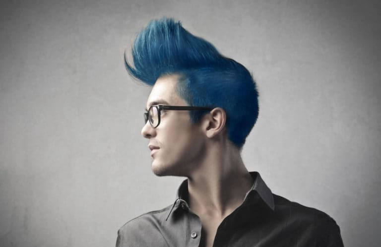
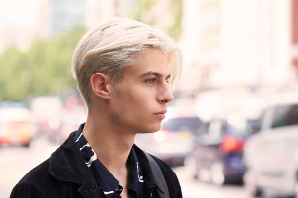
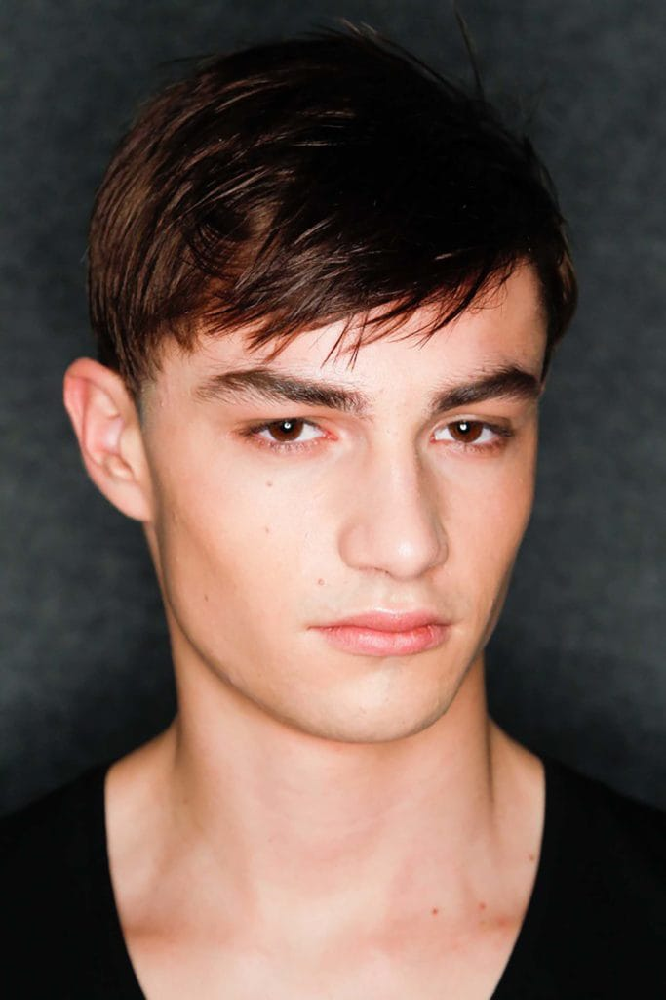
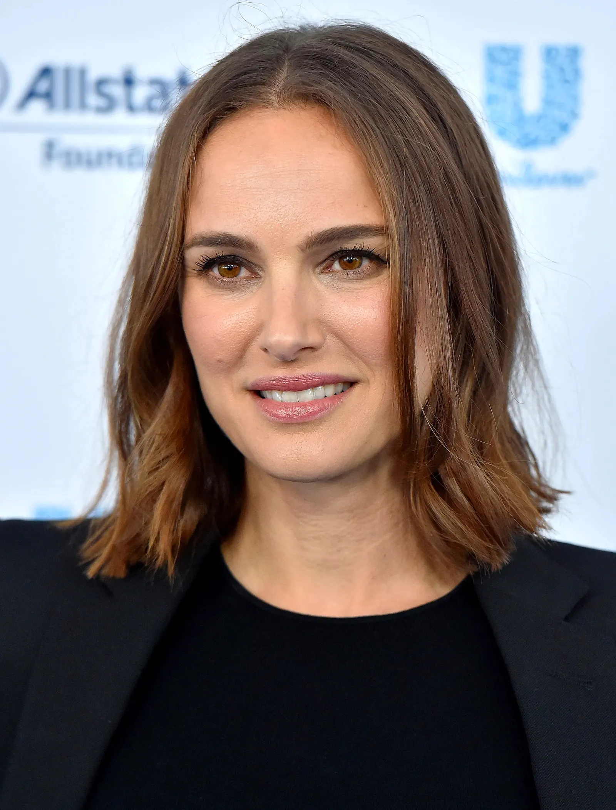
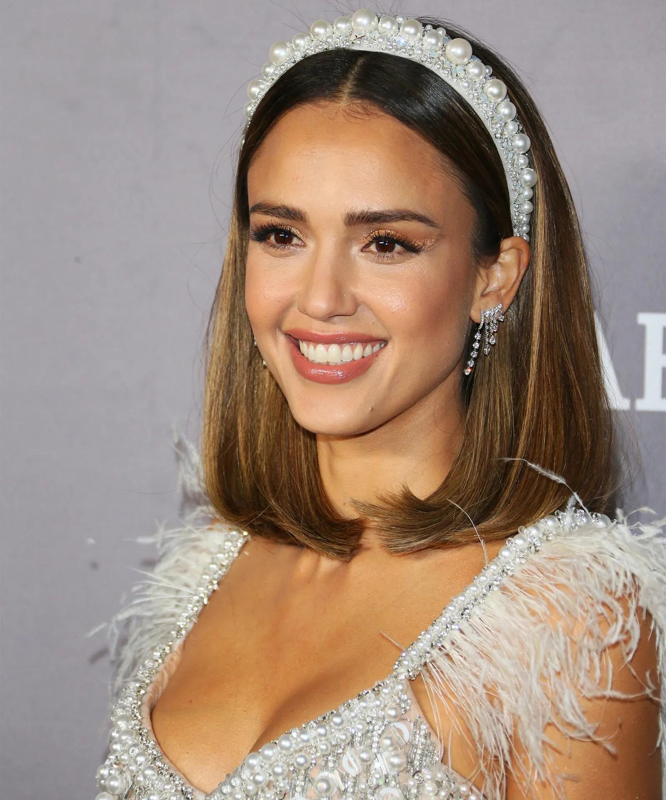

Colorimetria
TINTES PARA HOMBRES
AZUL CENIZO
Con la popularidad del género musical K-Pop, los jóvenes están experimentando con tintes de pelo decolorados. Es decir, con colores
y cortes intensos que se aplican después de aplicar bleach en el cabello.

RUBIO OXIGENADO
Este tinte de pelo se ve mejor en los hombres de tez clara o trigueña, pero no es exclusivo de ellos. Lo mejor de todo es que envejece
muy bien, y hasta se aprecia más cuando la raíz natural empieza a crecer. No te vamos a mentir, el proceso de aplicación es demorado, pero
si los futbolistas ganadores del Balón de Oro lo hicieron, también lo podrás hacer tú.

BRILLO INTENSO
Si no te animas a aplicar tintes de pelo, pero quieres actualizar tu look con algo más moderno, opta por una capa de brillo. A
diferencia de los tintes, el brillo no contiene nada de amoníaco, ni color, y ayuda a resaltar el tono natural tu pelo. Como su nombre lo
indica, el brillo hará que tu cabello irradie con luz propia.

GRIS PLATEADO
Para los hombres que les encanta exhibir sus canas, portando un corte de cabello de vanguardia, este color de pelo es perfecto. Si tu
pelo está en la etapa de ‘sal y pimienta’ y no quieres aplicar bleach, no optes por este color de cabello porque lo requiere.

TINTES PARA MUJERES
BAÑO DORADO
Tal como Beyoncé, el cabello dorado es una de las mejores opciones para darle mucha luz y vida a tus facciones, ¡y aún más si eres de
piel morena o con subtono cálido! El color brillante resalta los ojos y le aporta un glow único a la piel, algo que favorece a las mujeres
de 40 años que sufren de piel seca u opacidad. Lo único que debes buscar es un tono matizado, o sea que no se vea demasiado amarillo,
porque esto le podría restar elegancia y naturalidad a tu look.

CASTAÑOS
Por mucho tiempo se ha esparcido el mito de que los tintes oscuros envejecen, pero lo cierto es que puedes jugar con estos colores de
pelo empleando la técnica correcta para darle un aire sofisticado y fresco a tu apariencia. Por ejemplo, Natalie Portman lleva un cabello
castaño en las raíces, no demasiado oscuro, con un tono avellana más claro en las puntas que se degrada a modo de ombré, o sea que no se
ve dónde empieza ni dónde termina.

COPPER HAIR
¿Tu piel tiende más a los tonos fríos y necesitas un color que no te haga ver pálida? El rojizo, orientado al cobre, es todo un acierto
para ti. Lo que hace es un hermoso contraste con tu piel dejando un aspecto jugoso y sano, al mismo tiempo que le da un giro radical a tu
pelo con toque veraniego.
MECHAS CARAMELO
La mejor forma de darle la vuelta a tu cabello castaño oscuro, si es que ya te aburrió, ¡es agregar mechas o luces caramelo! Tanto
Penélope Cruz como Jessica Alba, dos mujeres de 40 años sumamente exitosas y guapas, han intentado este efecto con su melena y lucen
preciosas. Y no sólo eso, también nos hacen darnos cuenta de que un buen corte de cabello (como este lob) y los accesorios adecuados
